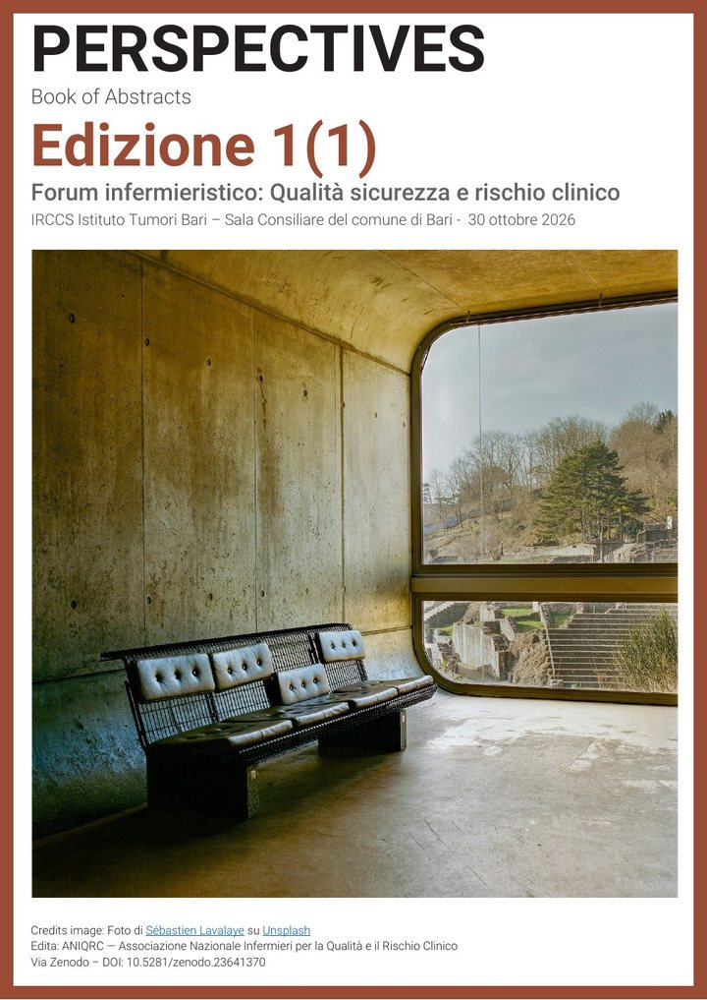

Congressi, corsi, tavoli di lavoro, giornate di studio: qui raccogliamo tutti gli appuntamenti in cui ANIQRC sarà presente — come relatori, partner o semplicemente per esserci, perché fare rete significa anche incontrarsi di persona.
Pathway, ricerca, eccellenza. Una giornata su qualità dell'assistenza, sicurezza delle cure e rischio clinico, con i lavori selezionati presentati nelle sessioni del pomeriggio. Nella pagina dell'evento il programma e le aree tematiche; qui sotto PERSPECTIVES, il Book of Abstracts con i 17 lavori dell'edizione.

Forum infermieristico: Qualità, sicurezza e rischio clinico · Bari, Sala consiliare del Comune · 30 ottobre 2026
Il volume raccoglie i lavori presentati al Forum di Bari: ogni abstract con titolo in italiano e in inglese, autori, affiliazioni e indicazione per la citazione, preceduti da un editoriale. Lo pubblica ANIQRC su Zenodo, l'archivio aperto del CERN, con un DOI che resta stabile nel tempo.
ANIQRC. PERSPECTIVES. Book of Abstracts, Edizione 1(1). Forum infermieristico: Qualità, sicurezza e rischio clinico; 30 ottobre 2026; Bari. Bari: ANIQRC; 2026. DOI: 10.5281/zenodo.23641370
Ogni voce apre il PDF alla pagina dell'abstract. Ciascun abstract riporta la propria indicazione per la citazione, con il DOI del volume.
Edito da ANIQRC — Associazione Nazionale Infermieri per la Qualità e il Rischio Clinico. Gli autori hanno ceduto ad ANIQRC i diritti sui contributi pubblicati: il volume e i singoli abstract si possono scaricare, condividere e citare liberamente indicando il DOI e ANIQRC come editore; non ne è consentita la riproduzione, totale o parziale. Foto di copertina: Sébastien Lavalaye su Unsplash.
Questa pagina raccoglie tutti gli eventi nazionali a cui parteciperemo: date, luoghi, programmi e modalità di iscrizione. Stiamo definendo i prossimi appuntamenti — torna a trovarci, oppure iscriviti alla newsletter per riceverli appena pubblicati.
Per collaborazioni e inviti come relatori: Francesco Menolascina — Coordinatore della rete e sviluppo nazionale.